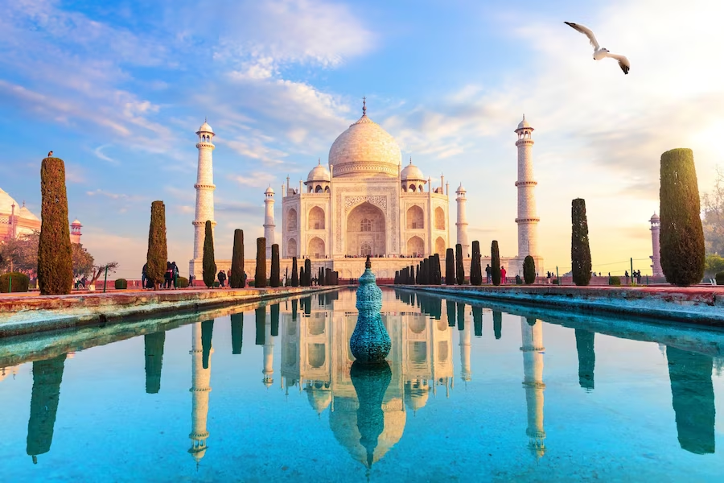

Tourism is the activity of travelling to different places for enjoyment, education, and relaxation. It helps people learn about new cultures, traditions, and lifestyles. Tourism also supports the economy and creates job opportunities.
India is one of the most beautiful countries in the world. It is famous for its historical monuments, natural beauty, colorful festivals, and delicious food. From mountains to beaches, India offers something for everyone.
Click the links above to explore amazing places, rich culture, and tasty food. Start your journey with us and enjoy virtual tourism!
